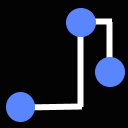
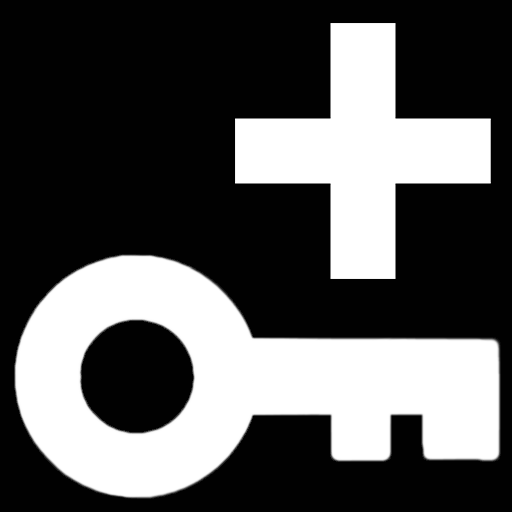

Animation Engine
Vrtist uses a custom animation engine.
The creation and edition of animations are done by selecting an object or a group of objects and using the dopesheet panel.

Properties that can be animated are: the position, rotation and scale of objects. The intensity and color of lights. The focal, focus and aperture of cameras.
To open the dopesheet panel go to the camera tool on the palette, and check the animation editor
The dopesheet offers a variety of controls.
Interpolation types for animation curves:  constant,  linear,
linear,  Bezier
Bezier
linear, BezierTimeline controls:
 Go to start.
Go to start. Go to the previous keyframe.
Go to the previous keyframe. Go to the previous frame.
Go to the previous frame. Play animation.
Play animation. Go to the next frame.
Go to the next frame. Go to the next keyframe.
Go to the next keyframe. Go to end.
Go to end. Record. Clicking on this icon will start a timer. At the end of this timer, move the selection as wanted. This will automatically create keyframes for each frame.
Record. Clicking on this icon will start a timer. At the end of this timer, move the selection as wanted. This will automatically create keyframes for each frame.Click the  icon that replaced the record icon to stop recording.
icon that replaced the record icon to stop recording.
icon that replaced the record icon to stop recording.The  icon will delete the animation for the selection.
icon will delete the animation for the selection.
icon will delete the animation for the selection. Add a keyframe at the current time for the object. Set the object as wanted, then click the icon to add a keyframe. Move the current frame on the timeline, change the object parameters, then add a new keyframe. Repeat these steps as needed to create an animation.
 Auto-key. Click this icon to lock the auto-key setting. A keyframe will be added every time the object is moved or a parameter is changed. Move to a new frame, and move the object/parameter to create a new keyframe.
Auto-key. Click this icon to lock the auto-key setting. A keyframe will be added every time the object is moved or a parameter is changed. Move to a new frame, and move the object/parameter to create a new keyframe. Remove a keyframe at the current frame.
Remove a keyframe at the current frame.To change the current frame, slide the blue marker on the timeline. By default the timeline shows keyframes 0 to 250. These values can be changed by clicking on them.
To change the displayed keyframes drag the start or end circles on the slider over the timeline. The gap can then be dragged along the slider to change the section displayed.

The current keyframe can also be changed by moving the primary controller joystick left or right.
The label on the right of the keyframe shows the current time, and keyframe number.
Underneath the selected object or number of objects is shown.
Under the timeline, keyframes added for this selection are displayed by a yellow diamond.